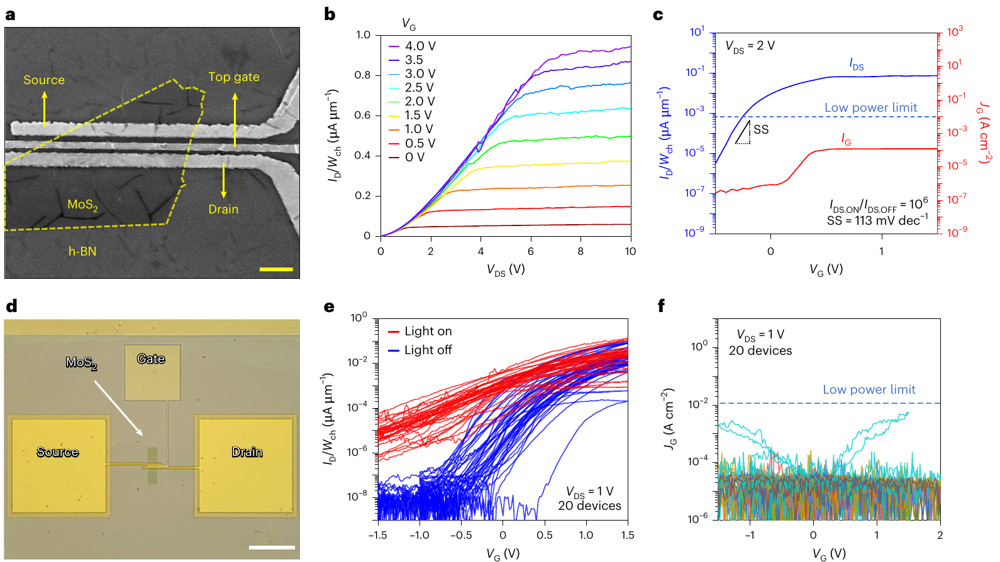

01 / 2D transistors
2D transistors & gate dielectrics
I study how metal electrodes and ultrathin hBN dielectrics influence leakage, reliability, and the electrical performance of MoS₂ transistors. My work connects materials selection with the design of low-voltage electronic devices.
Read the Nature Electronics paper ↗